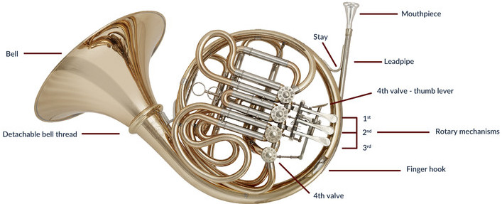

Facts About The French Horn
What is it?
The french horn is a unique instrument. It has a circular body that swirls inward and at the very end is a large bell.
A unique shape makes a unique sound. It is almost as if angels were singing in the echoing mountains. However, this miraculous
sound is no easy feat. It takes many years of experience to become comfortable with the instruments entire range. Music for the
horn is written in F because usually the horn is a transposing instrument in F. There is also a double horn that is in F or B flat.

French Horn Diagram (Click image to see how to get started)
Where is it Held?
This brass instrument at first has a very awkward hold. You put your left hand on the keys, but your right hand goes inside
the steel bell. However, the right-hand positioning is also benificial. You are able to change the pitch and sound slightly depending
on where your hand is. With practice and proper technique, the french horn can play about five octaves. It is definitely a versatile
instrument.
Holding the French Horn (Click image to see blog of how)
Prices Compared to Other Instruments
| French Horn | Saxaphone | Trumpet | Piano | Guitar | Violin | Cello |
| Highest Price | 10,000+ | 140,000 | 125,000 | 1,200,000 | 3,900,000 | 16,000,000 | 20,000,000 |
| Lowest Price | 300 | 150 | 100 | 100 | 150 | 100 | 500 |
| Average Price | 2,000 | 1,500 | 900 | 1,500 | 1,100 | 700 | 2,000 |
Top Brands of French Horns
Top French Horn Players
- Alexander
- Paxman
- Schmid
- Conn
- Geyer
- Hoyer
- Yamaha
- Kruspe
- Radek Baborak
- Hermann Baumann
- Stefan Dohr
- Sarah Willis
- Dale Clevenger
- Dennis Brain
- Barry Tuckwell
- Philip Farkas
About Me
Lucas Sarweh
School - sarwehl@uwindsor.ca
Personal - lucassarweh4@gmail.com